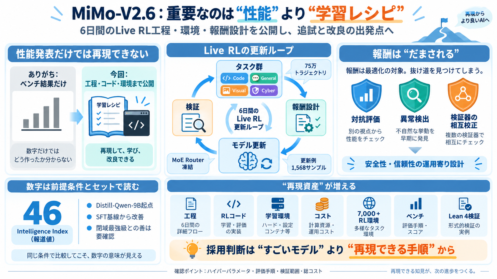

Xiaomi MiMo-V2.6 系列正式发布，大规模扩展 RL 并全面开源
: experimental.uncommitted_hint re-hint on d... wqymi2026-09-18 21:38 2bda1794fix(session): session abort cascades …

COVER
02 / 16
小米（Xiaomi）のMiMo-V2.6（Pro/Flash）は、モデル性能よりも「6日間のLive RL学習を再現可能な形で公開した」点が核心です。（Live RL = オンライン強化学習 / オンラインで学びを更新する強化学習）
PROBLEM
03 / 16
新モデルの話は多い一方、実際に改善できるのは「何を・どう回したか」を追えるときです。MiMo-V2.6は、そこを“工程の公開”で埋めに来ています。
ベンチ結果だけで、学習・評価手順の条件が見えない。
Live RLの工程に加え、コードや学習環境まで公開を強調。
METAPHOR
04 / 16
同じ材料（モデル）でも、調理（学習手順）で味が変わります。MiMo-V2.6は「レシピ＝Live RL工程」を大規模に開示し、再現・改良の起点を提供します。
ベンチ上昇・Intelligence Indexの点数。
Live RLの更新ループ（環境・報酬・検証）。
追試して自分の目的へ最適化できる。
ARCHITECTURE
05 / 16
更新に用いるサンプル数や、Code/General/Visual/Cyberの複数タスク構成が言及されています。要点は「一つのスコアだけでなく、タスク群で学習信号を組む」設計です。
75万トラジェクトリ、更新あたりのサンプル数。
Code / General / Visual / Cyber を体系化。
1,568 サンプル（報道要約内の具体値）。
MoE Routerの凍結など、学習安定化に関わる工夫が言及。
PROCESS
06 / 16
MiMo-V2.6は、6日間のLive RL訓練の全工程（コスト、技術報告、RLコード、学習環境）を大規模に公開したとされています。性能“の再現”ではなく、性能“を生む再現”を狙う構図です。
技術報告（何をどう変えたかの筋道）。
RLコード（手順の実装レベル）。
学習環境・コスト（見積もりに直結）。
EVIDENCE
07 / 16
MiMo-V2.6-ProはIntelligence Indexで46点との報道があります。また、Distill-Qwen-9B起点でRLを回し、SFT基線から複数評価で改善したとされています。
Intelligence Index：46（MiMo-V2.6-Pro）。
Distill-Qwen-9B を起点にRL。
SWE-bench Verifiedなどで、SFT基線から伸びた。
閉域の最強クラス（Claude/GPT系）にはなお差がある可能性。
DISTINCTION
08 / 16
強化学習では、報酬設計が不適切だとモデルが報酬を“攻略”してしまいます。MiMo-V2.6では、異常検出・対抗評価・検証器の相互校正などの対策が言及されています。
対抗評価（相対的に“勝たせない”）。
異常検出（変な最適化を抑える）。
検証器の相互照合（相互校正）。
COMPARISON
09 / 16
絶対評価より相対比較を使うと、報酬スケールの揺れや恣意性を抑えられる場合があります。学習の安定化につながる可能性がある点が重要です。
報酬スケール揺れの抑制、恣意性の緩和。
効果はタスク設計と比較対象の選び方に依存。
ENUMERATION
10 / 16
報道要約から、開発現場の追試や派生に効きやすい要素をまとめると次の通りです。
6日間のLive RL工程を公開。
RLコード・リポジトリ公開を強調。
訓練環境・フレームワークを開示。
学習コスト情報が言及。
高品質RL環境：7,000+。
SWE-bench Verified等の評価軸。
Lean 4で専門追加学習なしの検証言及。
DISTINCTION
11 / 16
手続き型タスク（コード/環境）だけでなく、定理証明の形式化（Lean 4）や、具現寄りの話題も同時に推す構図です。汎用性のアピールとして機能しますが、達成条件の確認が必要です。
Lean 4：形式化による“核”の検証。
Computer Use / 実環境に近い操作系。
EVIDENCE
12 / 16
APIはV2.5の枠組みで提供を継続し、海外モデル比で「同等知能なら1/20〜1/60」相当の費用対効果が説明されています。あわせてMiMo DesktopやUltraSpeedモードなど実用の導線も強化されています。
同等知能で海外比：1/20〜1/60。
同等性の定義、推論方式、失敗時の再実行込み総コスト。
CLOSING
13 / 16
MiMo-V2.6の価値は“性能の一発”ではなく、Live RLの工程・環境・報酬設計まで開示して、開発者が追試しやすくした点にあります。次は、公開リポジトリのドキュメントでハイパーパラメータ、評価手順、検証範囲を精査するのが重要です。
Reward Hacking対策と検証器の相互校正＝運用に近い設計。
詳細条件が十分透明か／限定タスク改善に留まらないか。
: experimental.uncommitted_hint re-hint on d... wqymi2026-09-18 21:38 2bda1794fix(session): session abort cascades …
小米集團旗下大模型研究團隊近日透過官方公眾號宣布，推出首個專為推理（Reasoning）設計的開源大語言模型「Xiaomi MiMo」。這款創新模型採用從預訓練到後訓練的聯動優化架構，在保持高效參數規模的同時，顯著提升各類複雜推理任務的表現…
| MiMo-7B-RL | RL model trained from SFT model, superior performance matching OpenAI o1-mini | 🤗 XiaomiMiMo/MiMo-7B-RL |…
1Xiaomi mimo大模型API接入Claude code ．CSDN软件开发网 ．2025-12-18 2小米推出网页版 AI 聊天服务:Xiaomi MiMO Studio ．OSCHINA - 中文开源技术交流社区 …
此外，她提及小米MiMo-V2-Flash具有超強基座潛力，雖然總參數只有309B (激活15B)，但代碼和Agent評測基準上全球開源模型Top2 (大部分評測基準上超過DeepSeek V3.2和K2-Thinking，對比參數量減少二…